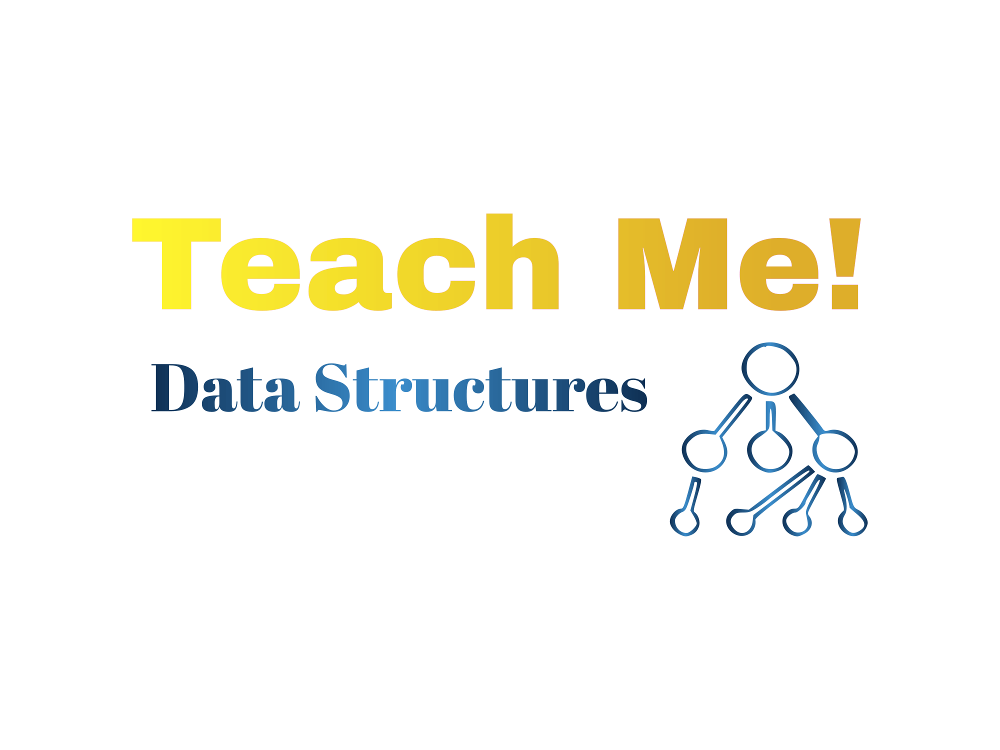

This course provides a comprehensive introduction to data structures, essential for efficient programming and software development. Learn how to implement and utilize arrays, linked lists, stacks, queues, trees, and graphs. Through hands-on coding exercises and real-world examples, you’ll build a strong foundation to optimize algorithm performance and prepare for technical interviews.